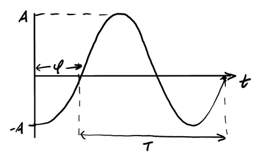
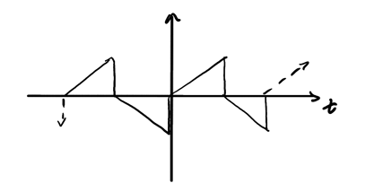

Sinusoidal Signals
Table of Contents
1. Sinusoidal Signals
The following is a graph representation of a sinusoidal signal:

Five key parameters characterize a sinusoidal signal:
| Symbol | Name | Units | Definition |
|---|---|---|---|
| \(A\) | Amplitude | — | Maximum displacement from zero |
| \(T\) | Period | seconds [s] | Time for one complete cycle |
| \(\phi\) | Phase | radians [rad] | Horizontal shift of the waveform |
| \(f\) | Frequency | Hertz [Hz] | Cycles per second: \(f = \frac{1}{T}\) |
| \(\omega\) | Angular frequency | [rad/s] | \(\omega = 2\pi f = \frac{2\pi}{T}\) |
A waveform is called periodic with period \(T\) if:
\begin{align} f(t) = f(t + nT), \: \forall n \in \mathbb{Z} \notag \end{align}Its standard cosine form is:
\begin{align} f(t) = A\cos(\omega t + \phi) \end{align}2. Fourier Series
The big idea is that we can describe any periodic signal with a Fourier series, that is, a sum of cosine and sine functions:
\begin{align} f(t) = {\color{blue}a_0} + \sum_{n=1}^{\infty}\left[{\color{red}a_n}\cos\left(n{\color{teal}\omega_0} t\right) + {\color{green}b_n}\sin\left(n{\color{teal}\omega_0} t\right)\right] \end{align}where:
\begin{align} &{\color{teal} \omega_0} = \frac{2\pi}{T} \notag \\ &{\color{blue} a_0} = \frac{1}{T} \int_0^T f(t) \text{ d}t \notag \\ &{\color{red} a_n} = \frac{2}{T} \int_0^T f(t)\cos(n{\color{teal}\omega_0}t)\text{ d}t \notag \\ &{\color{green} b_n} = \frac{2}{T} \int_0^T f(t)\sin(n{\color{teal}\omega_0}t)\text{ d}t \notag \end{align}\(\color{blue} a_0\) is the average value of the waveform, also known as the "DC component".
2.1. Symmetry Properties
2.1.1. Even Functions
Even functions are functions that satisfy \(f(t) = f(-t)\): geometrically this means that they are symmetric about the y-axis. It follows that there are no sine terms within the Fourier series for an even function: \(b_n\) are all zero, because they are integrals of even times odd functions, which are odd functions.
2.1.2. Odd Functions
Odd functions are functions that satisfy \(f(t) = -f(-t)\): geometrically this means that they are symmetric about the origin. These have no cosine terms: \(a_n\) are all zero, because they are integrals of odd times even functions, which are also odd functions.
2.1.3. Half-wave Symmetric Functions
Half-wave symmetric functions are functions that satisfy \(f(t) = -f\left(t - \frac{T}{2}\right)\), which visually means that each half-wavelength is symmetric:

These functions have no even harmonics, which means that all the coefficients \(a_{2k}\) and \(b_{2k}\) result in zero.
2.2. Integral Properties
The following integral properties are useful for deriving Fourier coefficients:
\begin{align} \int_0^T \sin(n\omega_0 t) \, dt = 0 \notag \\ \int_0^T \cos(n\omega_0 t) \, dt = 0 \notag \\ \int_0^T \sin(n\omega_0 t) \sin(m\omega_0 t) \, dt = 0 \quad (m \neq n) \notag \\ \int_0^T \cos(n\omega_0 t) \cos(m\omega_0 t) \, dt = 0 \quad (m \neq n) \notag \\ \int_0^T \sin(n\omega_0 t) \cos(m\omega_0 t) \, dt = 0 \quad (\text{for all } m, n) \notag \\ \end{align}2.3. Amplitude-Phase Representation
Alternatively, we can represent each harmonic as a single cosine using the amplitude and phase:
\begin{align} a_n\cos(n\omega_0 t) + b_n\sin(n\omega_0 t) = A_n\cos(n\omega_0 t + \phi_n) \notag \end{align}